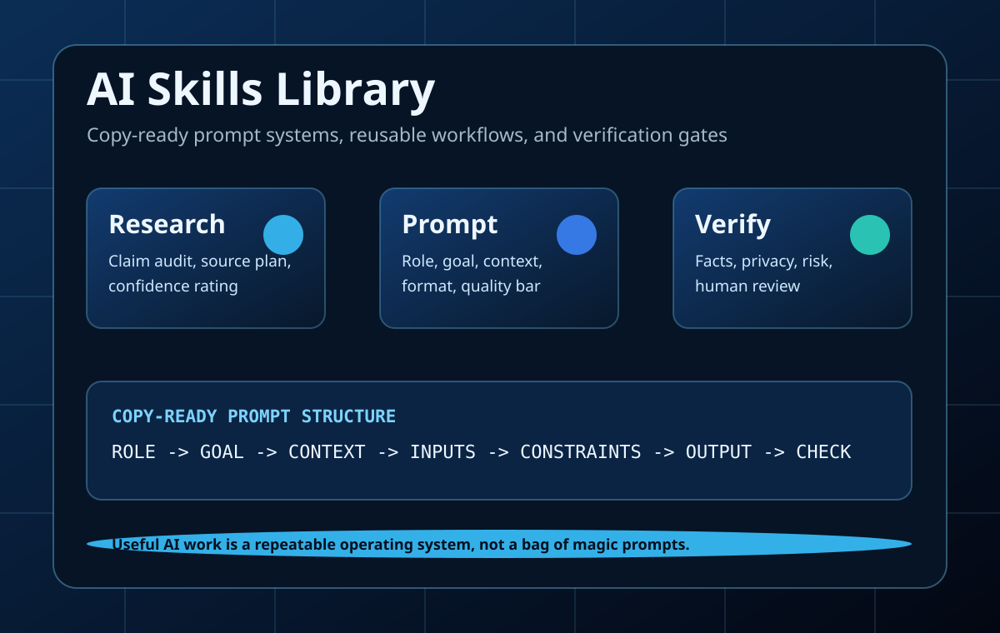
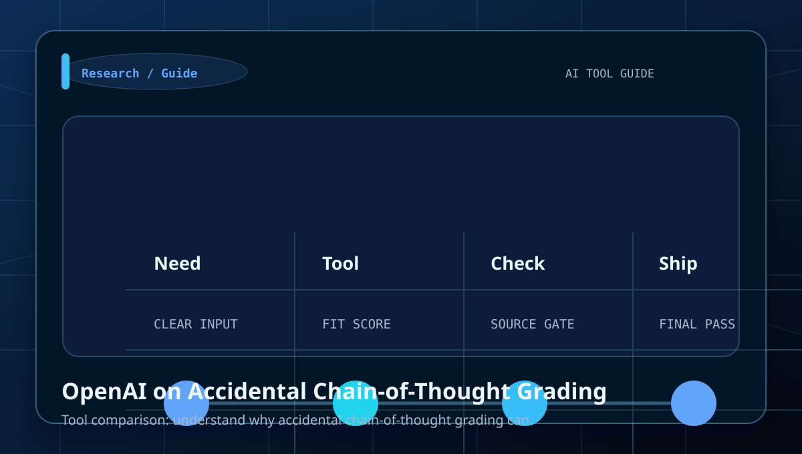
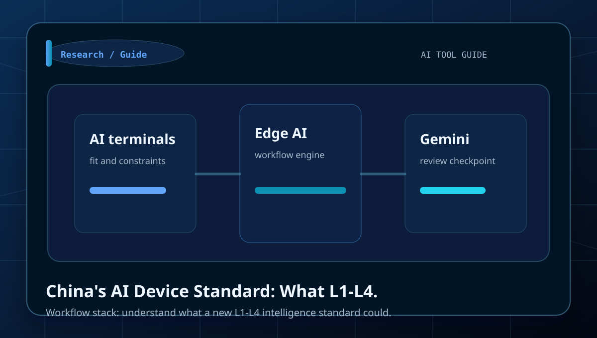
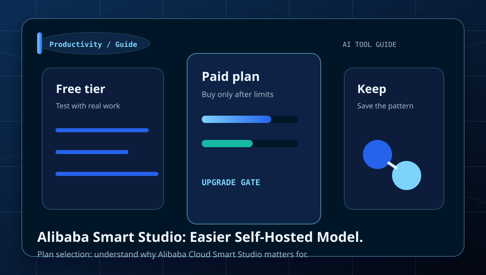
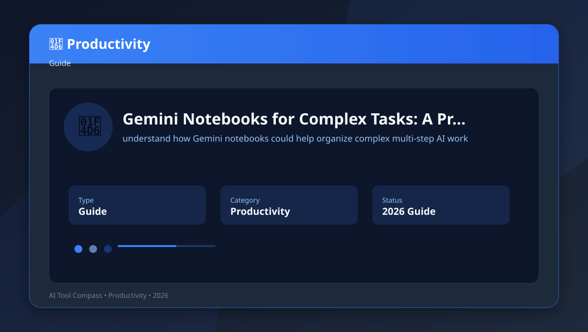
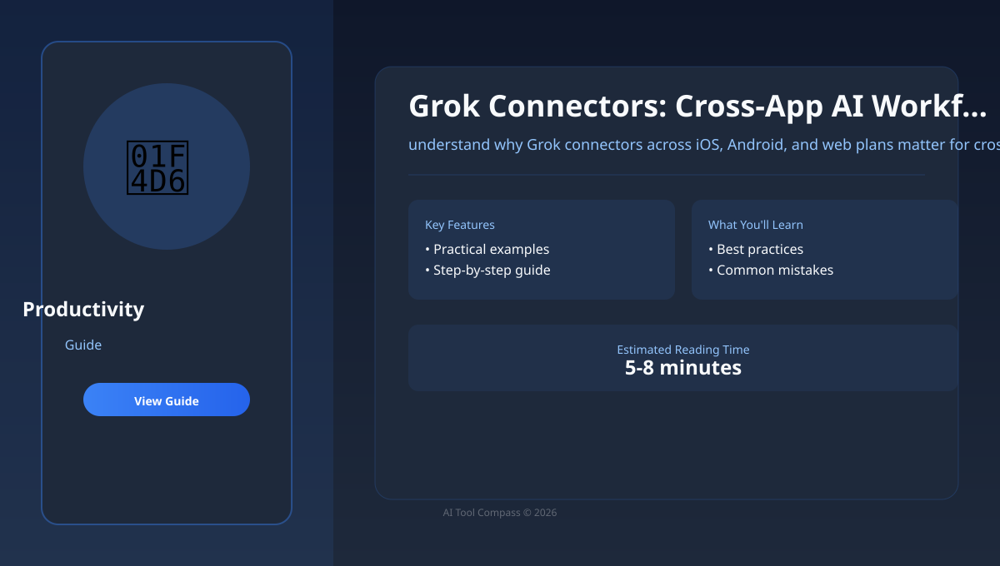
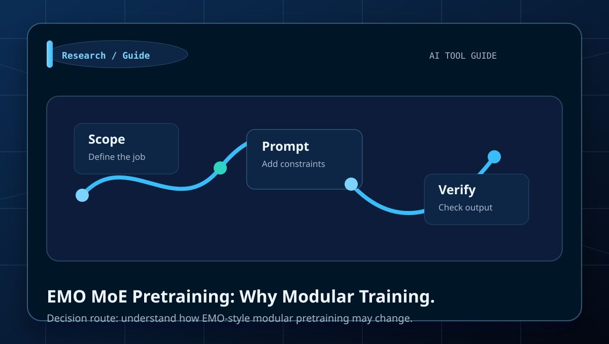
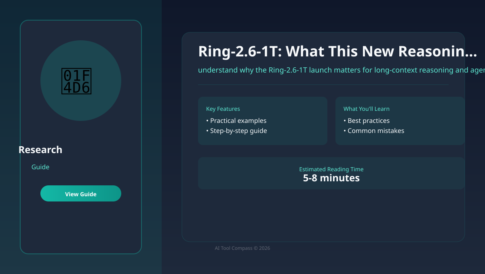

Use verified landing pages and pricing links before comparing plans or repeating temporary offers.
AI tool intelligence hub
Find the right AI tool before you pay for the wrong one.
AI Tool Compass is a practical blue-chip style AI navigation and tutorial hub: official AI website links, pricing checkpoints, beginner workflows, comparison tables, and monetization-ready editorial pages.
110 in-depth guides
12 AI sites tracked
10 SEO clusters
AI Skills library
Pick a category, open a guide, and follow prompts, tables, and tool-fit checks instead of hype.
The homepage doubles as a return surface with RSS, saved guides, and reading continuity.

110long-form tutorials with examples, checks, FAQs, and comparison tables
12mainstream AI websites with official links and pricing pages
10topic clusters covering chat, research, image, video, coding, and marketing
2026offer notes marked with a local verification date
Return faster
Give readers a reason to come back instead of bouncing once.
This block combines follow, save, and resume actions that work on a static site: RSS for subscription, local save states for favorites, and recent-reading continuity across visits.
Follow
Subscribe without handing over an inbox.
Use the site feed for fresh guides, then save the homepage locally so return visitors can jump back into the library in one click.
Saved guides
Build a shortlist worth revisiting.
When a reader saves an article, it appears here on the next visit so the homepage becomes a working dashboard instead of a one-time landing page.
No saved guides yet. Open an article and use the Save article button to start a private shortlist in this browser.
Continue reading
Pick up where you left off.
Recent reading history turns the homepage into a return surface, especially when the site adds new daily guides and comparison pages.
No recent reading history yet. Open a guide and it will appear here automatically.

Prompt Playbooks
Practical AI skills readers can copy and reuse.
Open the AI Skills library for copy-ready prompts, research workflows, coding specs, content editing checks, image prompts, video storyboards, and privacy redaction routines.
10 skill cards
9 prompts
Quality checklist
Featured AI websites
Main tools readers actually search for.
The homepage now works like an AI navigation portal: quick summaries, official links, pricing notes, and a clean route into deeper tutorials.
Chatbot
ChatGPT
A general-purpose AI assistant for writing, coding help, file analysis, search, and multimodal work.
Free plan available ChatbotClaude
A strong writing and reasoning assistant with long-context workflows, coding support, and projects.
Free plan available Google AIGemini
Google's AI plan ties Gemini into search, Gmail, Docs, Drive, and creative tools like Flow and Whisk.
Try Google AI Pro free for 1 month; student offer for 1 year Office AIMicrosoft Copilot
Microsoft's consumer AI assistant with web, Windows, and Microsoft 365 workflow integration.
Free version available Search AIPerplexity
A search-first assistant focused on sources, research, citations, and quick comparison work.
Pro perks program for eligible US subscribers AI CodingCursor
An AI coding editor for spec-driven workflows, code changes, and agent-assisted development.
Free Hobby plan Image AIMidjourney
A leading image generator for stylized visuals, concept art, and controlled prompt variations.
20% off annual billing Video AIRunway
An AI video and image platform for short clips, storyboards, motion tests, and creator workflows.
Yearly plans show 20% offLearning paths
Start by use case, not by hype.
Each path connects the directory, category hub, and long-form articles so beginners can move from tool discovery to practical execution.
Choose your first AI toolkit
Start with one chatbot, one research assistant, and one productivity workspace before buying specialist tools.
Build visuals, video, and voice
Use image prompts, storyboard-first video planning, and short voice samples to control cost and quality.
Automate meetings, notes, and email
Turn repeatable work into checklists and only automate the steps that are already stable.
Use AI coding without chaos
Clarify requirements, write a small spec, keep project memory, then edit one function or file at a time.
Offer watch
Current free trials and discount signals.
These are short discovery notes, not guarantees. The page links to official pricing pages so readers can verify before paying.
Topic clusters
Built around search intent and real tasks.
The structure mirrors proven AI directory and editorial patterns: category hubs, tool comparisons, beginner tutorials, prompt libraries, mistake checklists, and disclosure pages.
Chatbots
AI Chatbots
writing, reasoning, file analysis, planning, and everyday assistant work.
ResearchAI Research
source discovery, fact-checking, literature scans, and research briefs.
ImageAI Image Generation
prompt design, thumbnails, product concepts, illustrations, and brand visuals.
VideoAI Video Generation
short clips, explainers, avatar videos, captions, and storyboard-led production.
DesignAI Design
social posts, decks, landing graphics, brand kits, and non-designer production.
ProductivityAI Productivity
notes, meetings, automations, task systems, and team operating workflows.
WritingAI Writing
blog posts, newsletters, ads, editing, brand voice, and content planning.
CodingAI Coding
coding help, debugging, code explanation, tests, and beginner programming workflows.
AudioAI Audio and Voice
voiceovers, transcription, podcasts, music sketches, and audio cleanup.
MarketingAI Marketing
SEO, social media, ads, funnels, analytics, and campaign planning.
Editor's toolkit
What every page gives the reader.
This site is built to avoid thin AI content. The useful details are visible on every long-form article, so the reader knows how to act.
Decision tables
Compare tools by task, trade-off, and beginner risk instead of brand popularity.
Prompt briefs
Reusable role, goal, input, context, output format, and review-standard prompts.
AI Skills
Copy-ready prompt playbooks turn useful workflows into repeatable systems readers can apply immediately.
Field notes
Community-inspired workflow lessons translated into original English guidance.
Quality checks
Source verification, privacy notes, affiliate disclosure, and publish-ready checklists.
Featured library
Start with the highest-intent guides.
These pages target durable searches: best tools, alternatives, comparisons, tutorials, prompt examples, and beginner workflows.

Comparison
AI Chatbots
ChatGPT vs Claude vs Gemini: Beginner Comparison
Learn how to choose between the three major chatbots for daily work with a clear workflow, examples, and beginner mistakes to avoid.

Workflow
AI Research
Perplexity AI Research Workflow: Beginner Guide
Learn how to move from a question to a source-backed brief with a clear workflow, examples, and beginner mistakes to avoid.

Prompting
AI Image Generation
Midjourney Prompt Guide for Beginners
Learn how to control subject, style, lighting, and composition with a clear workflow, examples, and beginner mistakes to avoid.

Tutorial
AI Video Generation
Runway AI Video Guide for Beginners
Learn how to create short clips with storyboard-first planning with a clear workflow, examples, and beginner mistakes to avoid.

Workflow
AI Design
Canva AI Design Workflow for Beginners
Learn how to turn a short brief into polished practical assets with a clear workflow, examples, and beginner mistakes to avoid.

Guide
AI Productivity
Best AI Tools in 2026: Practical Beginner Guide
Learn how to choose a useful AI tool stack across chatbots, research, images, video, design, and productivity with a clear workflow,.
Comparison
AI Chatbots
ChatGPT vs Claude vs Gemini: Beginner Comparison
Learn how to choose between the three major chatbots for daily work with a clear workflow, examples, and beginner mistakes to avoid.

Comparison
AI Research
Perplexity vs ChatGPT for Research
Learn how to know when sources matter more than open-ended reasoning with a clear workflow, examples, and beginner mistakes to avoid.

Comparison
AI Image Generation
Best AI Image Generators: Beginner Comparison
Learn how to choose an image tool for different visual jobs with a clear workflow, examples, and beginner mistakes to avoid.

Comparison
AI Image Generation
Midjourney vs DALL-E vs Ideogram
Learn how to compare realism, text rendering, style control, and ease of use with a clear workflow, examples, and beginner mistakes to.

Comparison
AI Video Generation
Best AI Video Generators: Beginner Comparison
Learn how to choose video tools by clip type and budget with a clear workflow, examples, and beginner mistakes to avoid.

Comparison
AI Video Generation
Runway vs Pika vs Synthesia
Learn how to compare cinematic clips, quick motion, and avatar videos with a clear workflow, examples, and beginner mistakes to avoid.
Latest updates
Newest AI workflow articles.
This block is fed by the modular article data file, so the homepage can surface newly added daily articles after one rebuild.

Guide
OpenAI accidental chain-of-thought grading
OpenAI on Accidental Chain-of-Thought Grading
Benchmark headlines deserve skepticism when evaluation design accidentally rewards leaked reasoning instead of genuine task performance.

Guide
Anthropic teaches Claude the why
Teaching Claude the Why: A Better Safety Alignment Story
Alignment stories become product stories when they improve explanation quality and reduce policy whiplash in ambiguous tasks.

Guide
AI terminal intelligence grading standard
China's AI Device Standard: What L1-L4 Intelligence Means
Device intelligence standards matter only if they turn vague hardware AI claims into capabilities buyers can actually compare.

Guide
OpenRouter agent SDK with human review
OpenRouter Human Review: A Safer Pattern for Agents
Human review hooks matter when agents can touch tools and files, but only if approval happens at the right risk points.

Guide
Alibaba Cloud Smart Studio
Alibaba Smart Studio: Easier Self-Hosted Model Workflows
Self-hosted AI platforms matter when data control, latency, and governance outrank consumer-style convenience.

Guide
Bugbot usage-based pricing update
Bugbot Pricing Shift: What Usage-Based Billing Changes
Usage-based billing changes the buying decision because AI review cost now scales with workflow intensity instead of flat access alone.

Guide
Gemini notebooks for complex tasks
Gemini Notebooks for Complex Tasks: A Practical Take
Notebook-style AI becomes useful when persistent context beats one-shot chat for research, drafting, and multi-step decisions.

Guide
Grok connectors rollout
Grok Connectors: Cross-App AI Workflows Are Getting Real
Connector rollouts matter only if they reduce copy-paste work without widening privacy, permissions, or review risk.

Guide
EMO MoE model and modular pretraining
EMO MoE Pretraining: Why Modular Training Matters
EMO-style modular training is less about research jargon and more about whether future models can scale without full-cost retraining.

Guide
Ring-2.6-1T model release
Ring-2.6-1T: What This New Reasoning Model Means
A new reasoning model only matters if it changes long-context reliability, usable pricing, and agent workflow discipline in real work.
Trust and monetization
Monetization roadmap without weakening trust.
Monetization roadmap: build useful pages first, then add compliant ad placements, affiliate disclosures, comparison intent pages, and recurring update checks.
1
Publish helpful clusters
Keep the 100-page structure organized around real search intent and practical tasks.
2
Add compliant ads
Use reserved placements only after the site has policies, traffic, and original value.
3
Layer affiliate pages
Disclose relationships, link to official pricing, and explain who should skip each tool.
4
Update offers
Review pricing pages regularly so trial and discount notes do not become stale.
Reserved responsive ad placement